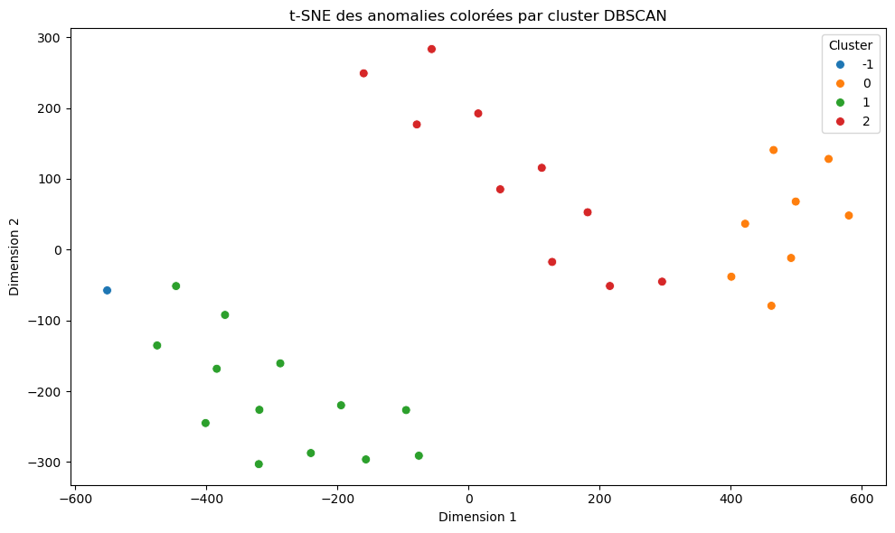
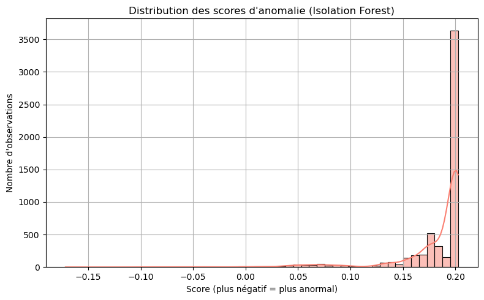

Le problème
Navitrends, entreprise de solutions digitales, héberge des sites qui reçoivent chaque jour des milliers de requêtes. Une partie vient de scans de vulnérabilités, de tentatives de connexion en masse ou de robots. Les règles fixes (seuils, signatures) ratent les attaques nouvelles et déclenchent beaucoup de fausses alertes.
Données : les logs bruts de mai à juillet 2025, 92 fichiers, 1,83 Go, sans aucune étiquette. Il fallait donc une méthode non supervisée, puis une façon honnête de la valider.
Ce que montrent les données
L'analyse exploratoire des 10 adresses les plus actives a montré des comportements nets : environ 9 000 requêtes chacune, des URL très variées (entropie proche de 13) avec un seul navigateur déclaré (entropie 0), une majorité de réponses 404 et des accès répétés à des pages d'administration ou de mot de passe. C'est la signature de scanners automatiques. Ces constats ont guidé le choix des caractéristiques.
- LectureExpressions régulières : IP, date, méthode, URL, code HTTP, navigateur, taille
- EnrichissementURL sensibles (connexion, administration), pays et opérateur (GeoLite2)
- AgrégationPar adresse IP et par fenêtre de 5 minutes
- Caractéristiques11 indicateurs : volumes, erreurs, entropies, tailles, variations
- Jeu final697 706 fenêtres prêtes pour le modèle
- Volume : nombre de requêtes GET et POST, tailles des réponses.
- Erreurs : réponses 4xx et 5xx.
- Diversité : entropie de Shannon des URL et des navigateurs déclarés.
- Sécurité : nombre d'URL sensibles visitées.
- Dynamique : variation par rapport à la fenêtre précédente.
Le modèle
- Isolation Forest note chaque fenêtre (100 arbres, échantillon de √N, graine fixée) ; le score est converti en probabilité d'anomalie. Je l'ai comparé à un autoencodeur en croisant les adresses signalées par les deux.
- DBSCAN regroupe ensuite les anomalies en familles de comportements, avec un rayon choisi sur la courbe des distances aux k plus proches voisins (coude vers 0,565), pour que l'analyste traite des groupes plutôt que des adresses une à une.
- Test sur une journée jamais vue : les logs du 12 août 2025, exclus de l'entraînement.
| Famille trouvée (12 août) | Adresses | Interprétation |
|---|---|---|
| Beaucoup de GET, peu de POST | 8 | Aspirateur de site ou robot agressif |
| Beaucoup de POST | 14 | Tentatives d'injection ou de spam |
| Faible volume, comportement atypique | 17 | À examiner |
| Rotation de navigateurs et URL sensibles | 4 | Attaque discrète et ciblée |
Qualité des groupes : silhouette de 0,65 et indice de Davies-Bouldin de 0,45 sur la combinaison GET/POST ; 0,56 et 0,52 sur la combinaison navigateurs/URL sensibles.


Validation sans étiquettes
Sans vérité terrain, j'ai validé de deux façons complémentaires.
- Base externe de menaces. Les adresses détectées ont été vérifiées dans CrowdSec, une base collaborative d'adresses malveillantes : une partie importante y figurait déjà pour des attaques par force brute ou des scans agressifs.
- Base simulée. 2 000 fenêtres dont 120 anomalies injectées, pour pouvoir calculer des métriques classiques.
- Rappel : anomalies trouvées
- 100 %
- Précision sur les alertes
- 85 %
- Score F1 (anomalies)
- 0,92
- Exactitude globale
- 89,5 %
Toutes les anomalies injectées sont trouvées, au prix de quelques fausses alertes (15 % des alertes). Des anomalies injectées sont plus faciles à repérer que de vraies attaques : ces chiffres valident la méthode, ils ne garantissent pas la même performance en production.
L'application ThreatLens
Une application web Flask pour les analystes en sécurité, branchée sur le modèle.
- Analyse en continu : un journal PHP enregistre les requêtes du site ; un processus en arrière-plan les analyse par lots de 100 et met à jour le tableau de bord.
- Pour l'analyste : liste des anomalies, fiche par adresse (pays, ville, opérateur), carte Leaflet, seuil d'alerte réglable par l'administrateur, rapport PDF par e-mail (ReportLab, matplotlib).
- Sécurité de l'outil : inscription validée par un administrateur, rôles, mots de passe hachés, réinitialisation par code envoyé par e-mail.
- Performance : SQLite pour l'historique, tampons circulaires en mémoire protégés par verrou, cache de géolocalisation : réponses de l'interface sous 200 ms.
Ce que j'ai appris
Les premières adresses signalées étaient des robots d'indexation de moteurs de recherche : leur comportement est vraiment inhabituel, mais pas malveillant. Une anomalie n'est pas une attaque. C'est pourquoi l'outil affiche le pays et l'opérateur réseau de chaque adresse : l'analyste trie vite, et la décision finale lui revient.
Limites
Fausses alertes. Les robots légitimes ressortent comme anomalies ; il faut une liste blanche ou une étape de tri.
Validation indirecte. Les métriques viennent d'anomalies injectées, et la correspondance avec CrowdSec n'a pas été chiffrée ; une base externe n'est pas une preuve absolue.
Délai de détection. Les fenêtres de 5 minutes imposent jusqu'à 5 minutes avant une alerte.
Déploiement. L'application a été testée en local ; la mise en production sur serveur était l'étape suivante.
Confidentialité
Ce travail a été réalisé pour une entreprise. Le code et les données restent confidentiels : cette page présente la démarche, les résultats validés et des graphiques tirés de mon rapport de stage, sans aucune capture d'écran des outils.